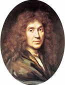
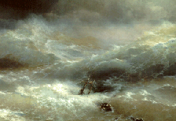

Шедевры мировой литературы
| Великие писатели Франции |
| Франсуа Рабле 
|
В 1534г, после его первого посещения Италии, Рабле опубликовал свою книгу (The vie trшs horrifique du
grand Gargantua, pare de Pantagruel) "Очень ужасная жизнь Великого Гаргантюа, отца Пантагрюэль" . Он
прослеживает жизнь гиганта от его рождения до создания им Гедонистического аббатства Thulime. Рабле
отдает свою бьющую через край фантазию на службу свои земным героям и второстепенным характерам, среди
которых - студенты, монахи и простые граждане. Позади необузданной фантазии происходящего, однако,
прячутся гуманистические идеи автора, который передает их с чувством юмора, заставляющим читателя
задуматься. Как он сам говорил, "все происходящее здесь - это не шутка." |
|
| Вольтер
|
Философский роман Кандид был опубликован в 1759г. В нем Вольтер описывает все злоключения молодого
человека, который веря в красоту мира и добродетель человека, не встретил ничего кроме разочарования и
страданий. Он спасся от полного отчаяния только благодаря словам Турка, который посоветовал ему "забыть
о мире возможно быстрее, работая в его саду." С ужасной иронией, пессимизмом и жестоким чувством юмора,
автор осуждает доктрину оптимизма, принесшую популярность Лейбницу. |
|
| Мольер  |
В 1669г, после пяти лет изнурительной борьбы против религиозного фанатизма некоторых членов двора и
Католической иерархии, Мольер смог поставить свою пьесу Tartuffe ou l'imposteur (Тартюф или Обманщик).
Его враги не забыли его за изображение лицемера, готового обмануть своего защитника и лишить его
имущества, флиртовать с его женой и получить в жены его дочь. Мольер использовал свой сюжет, осуждая
лицемерие и безжалостную злобу религиозных мошенников, чтобы создать блистательную интригу семнадцатого
века, написанную в самом прекрасном классическом стиле. |
 |
Жюль Верн  |
Опубликованная в 1870г Двадцать тысяч лье под водой рассказывает о десяти месяцах, проведенных в
плавании под океанами Французским натуралистом Аронаксом и его слугой после того, как они были против
своей воли помещены на борт подводной лодки. Под командованием Капитана Немо Наутилус боролся с террором
на морских просторах. Среди гигантских осьминогов и островов с каннибалами, от Суэцкого перешейка до
Антарктики, в компании команды сорвиголов приключения и драматические обороты становились легкими и
быстрыми. Ни в одной из своих остальных книг Жюль Верн не показал такого уровня мастерства, с такой
убедительностью соединяя выдумку и научный прогресс. |
 |